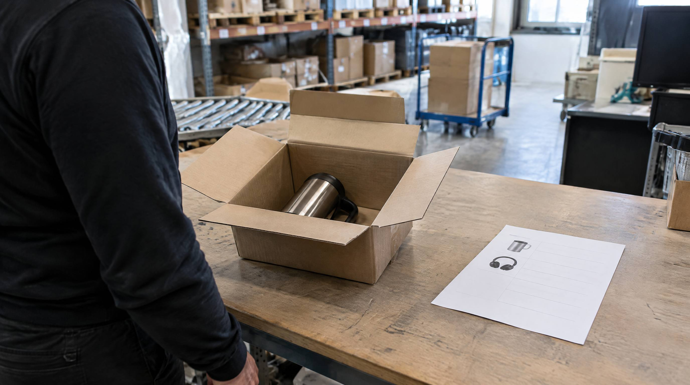

Medarbejderen tog den forkerte størrelse. Kunden fik den forkerte farve. Eller tre styk i stedet for to. Plukkefejl sker. Spørgsmålet er hvad de faktisk koster, når du lægger alle led sammen.
De fleste regner kun med vareværdien. Det er en dårlig regning.
Den fulde pris på en plukkefejl
En plukkefejl udløser en kæde af omkostninger de fleste ikke ser samlet:
- Genforsendelse: Ny korrekt vare sendt = fragt 40-80 kr.
- Returfragt: Kunden sender forkert vare retur = fragt 40-80 kr.
- Arbejdstid modtagelse: Kontrol og registrering af returvare = 15-30 min = 50-100 kr.
- Kundeservicetid: Håndtering af henvendelse, undskyldning, opfølgning = 20-45 min = 70-150 kr.
- Emballage til genforsendelse: 10-30 kr.
- Eventuel kompensation: Rabatkupon eller refusion = 50-200 kr.
Total direkte omkostning per plukkefejl: 210-640 kr. Plus vareværdien, hvis varen ikke kan sælges igen.
For et lager med 1.000 ordrer om måneden og 2% fejlrate er det 20 fejl = 4.200-12.800 kr. om måneden. 50.000-154.000 kr. om året.
Prisen per fejl dækker genforsendelse, returfragt, tid til modtagelse og kundeservice. Spændet i tabellen ovenfor er 210-640 kr.
👉 SmartPack bekræfter hvert eneste pluk med scanning, så den forkerte vare bliver fanget før den kommer i kassen. Se hvordan →
De indirekte omkostninger er endnu større
Over de direkte tal ligger de indirekte, som er sværere at måle men mindst lige så vigtige:
- Tabt genkøb: En kunde der modtager forkert vare køber sjældent igen. Hvad en kunde er værd over tid, varierer for meget mellem brancher til at et branchetal siger noget. Regn det ud af jeres egen genkøbsrate og gennemsnitsordre, så ved I hvad en tabt kunde koster jer.
- Negativ anmeldelse: Utilfredse kunder skriver anmeldelser. Én 1-stjernet anmeldelse på Trustpilot kræver i snit 10 positive for at neutralisere scoren.
- Medarbejdermorale: Gentagne fejlhåndteringer er frustrerende for alle. Høj fejlrate = høj stress = højere udskiftning af medarbejdere.
Hvad er en acceptabel fejlrate?
Benchmark for e-commerce lager:
- Over 2%: Du har et strukturelt problem. Det koster dig penge og kunder.
- 1-2%: Bedre end de fleste manuelle lagre, men stadig ikke godt nok.
- 0,5-1%: Godt. Opnåeligt med gode processer og delvis scanning.
- Under 0,5%: Fremragende. Kræver systematisk scan-bekræftelse på alle pluk.
Årsagerne til plukkefejl
Plukkefejl opstår typisk fra ét af disse steder:
Visuelle forvekslinger
Varer der ligner hinanden placeret tæt. Rød og grøn variant af samme produkt side om side. Lille og stor pakke med samme design. Plukkerens øje glider, hånden tager den forkerte.
Manglende bekræftelse
Når plukkeren ikke scanner varen for at bekræfte det er den rigtige, er der ingen sikkerhedsnet. Fejlen opdages først når kunden åbner pakken.
Stress og tidspres
Højt tempo under Black Friday, jul og kampagner øger fejlraten markant. En plukkerate på 120 linjer/time giver højere fejlrate end 80 linjer/time.
Uklare plukordrer
Når plukordren ikke er tydelig, gætter plukkeren. Gættede pluk er fejlbehæftede pluk.
Sådan reducerer du plukkefejl
Den mest effektive enkelt-forbedring er scan-bekræftelse: plukkeren scanner varens stregkode når den plukkes, og systemet bekræfter at det er den rigtige vare til den rigtige ordre. Fejlen stoppes ved kilden, ikke når kunden klager.
Andre effektive tiltag: separate lokationer for visuelle tvillinger, klare plukordrer med billede af varen, kontrol-scan ved pakkebordet og fejlregistrering der gør det muligt at finde mønstre.
Hvad SmartPack gør
SmartPack bruger scan-bekræftelse på hvert pluk. Plukkeren scanner lokation og vare, systemet bekræfter eller afviser. Forkert vare = afvisning + ny anvisning. Det sker inden varen når pakkebordet. Kunder hos SmartPack rapporterer typisk 80-90% reduktion i plukkefejl i de første måneder.